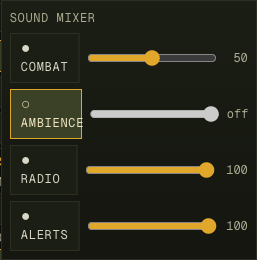
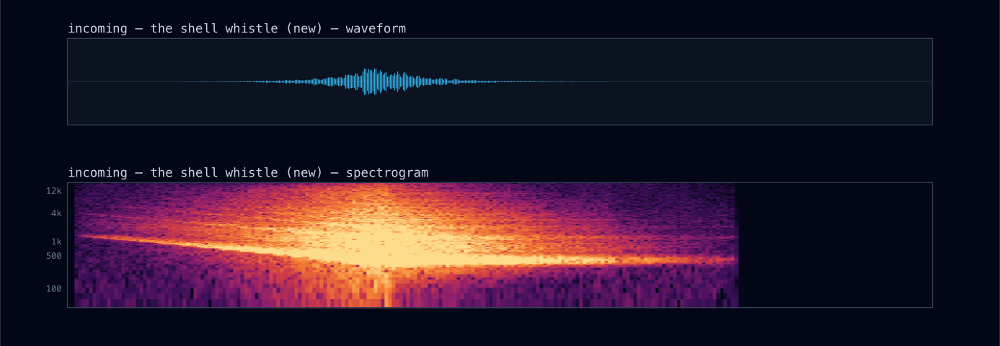
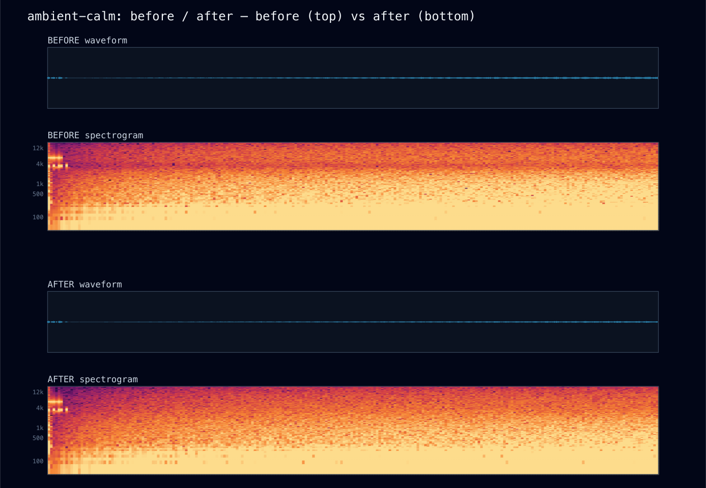
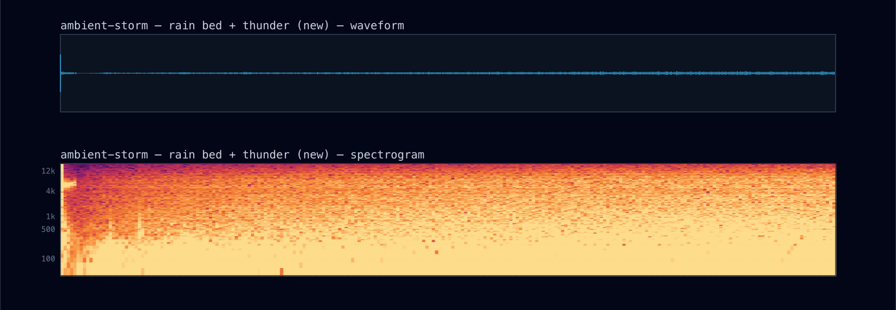
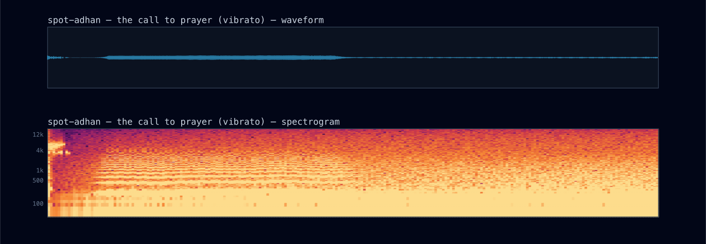
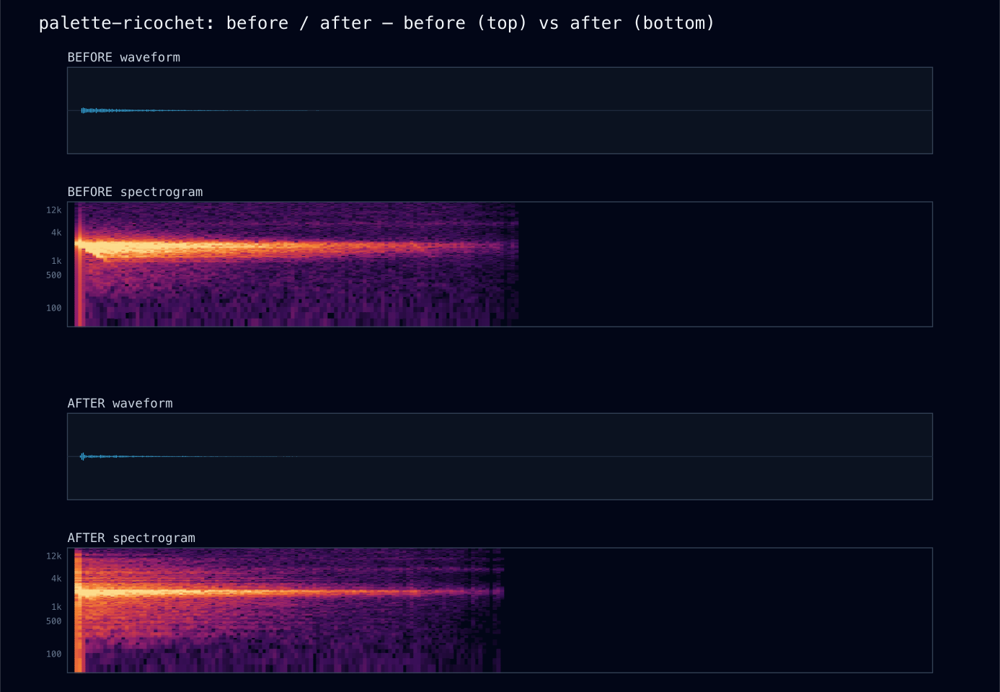

before
— did not exist —
Two deliverables. One: a per-category sound mixer — combat, ambience, radio, and alerts each get an on/off toggle and a volume slider, persisted per device. Two: five improvements to the audio itself, each grounded in either a recorded residual of the 2026-06-07 soundscape campaign or a missing battlefield signature — and each verified by the offline oracle as a number, not a vibe.
The engine already had four submix buses; the mixer inserts a user gain between each bus and master
(bus → category → master, lib/audio/player.ts). That placement is the design decision: the
contact-duck system writes absolute values to the bus gains, so putting the user's trim on a separate
downstream node means ducking and user preference multiply instead of fighting. Two consequences worth
knowing: the shared valley-reverb return is routed into the combat category (only combat sounds feed
it — muting combat must also mute its echo, not leave a disembodied tail), and the danger-close klaxon moved
from the combat bus to the alerts bus where it semantically belongs (it is a command-channel warning,
not battlefield sound) with trims re-balanced so its absolute level is unchanged.

Live-verified end to end: UI toggle → store → engine gain (ambience 0.000, combat 0.500) →
localStorage itm-ui-v1 → survives reload. The oracle re-render after the re-routing showed all
24 scenes within 0.15 dB of baseline — the mixer's plumbing is level-neutral by construction.
Why: indirect fire had a tube report ("shot") and an impact ("splash") but nothing in between —
yet the 2–3 seconds of descending shriek before a mortar round lands is the single most recognizable
indirect-fire experience in every first-hand account. The sim already counts down FireMission.etaS
each tick, so the mapper now voices one whistle per mission, deterministically, 2.4 s before the first round
(INCOMING_LEAD_S, lib/audio/mapper.ts) — the whistle ends exactly as the blast arrives. The synth
is a triangle sweep (~1.3 kHz → 320 Hz) with a flutter that deepens as the round closes, plus a swept-noise
whoosh an octave up, under a swelling envelope: the swell is the dread.

Why: the 2026-06-07 campaign shipped the living valley bed but recorded its own gap: the calm scene measured corr 0.997 / width 4% — effectively mono. The fix was less about panning and more about a subtlety of synthesis: all bed voices loop one shared noise buffer, and two in-phase filters of the same source stay correlated no matter how you pan them. Each voice now starts at a different offset into the loop (noise autocorrelation dies in samples, so offset reads are genuinely uncorrelated), and then the panning does real work: the river splits into two band voices (950 / 1900 Hz, the bird-band notch preserved) straddling the river's actual screen bearing, the generator pans to the COP's bearing, rain is Haas-widened (13 ms), and the wind howl spreads ±0.5.

Why: Rain weather had a hiss bed and droplet ticks but no thunder — a Kunar mountain storm without its defining sound. A new Poisson spot layer (λ = 0.022/s, Rain only) builds each roll as a mid-frequency strike head that darkens into a brown-noise rumble with 2–3 swells, answered ~0.6 s later by a quieter roll panned to the opposite quarter — the sound crossing the valley. Deliberately not gated by contact: a firefight silences the birds, never the sky.

Why: the call to prayer is formant-filtered sawtooth with a programmed melisma — but a held note with mathematically flat pitch reads as a slide whistle, not a human voice. A 5.3 Hz vibrato (depth 2.5% of the base pitch) fading in over the first second is the classic synthesis tell of a singing voice, and it does more for realism than any filter change.

Why: every deflection played the identical zing — the most repetitive sound in a long firefight.
Three deterministic timbre families now key off the cue's hash (cue.v): the classic singing
zing (~45% of rounds), a short hard fast-tumbling buzz (~30%), and a rarer high thin
whine with a long fall (~25%) — plus an impact tick grounding each one in a hit. Same mechanism,
three parameterizations; same seed still gives the same firefight.

| scene | rms dB | corr | width % | tail ms | audible ms |
|---|---|---|---|---|---|
| ambient-calm | -42.62 → -45.48 | 0.997 → 0.963 | 4 → 12.4 | 1740 → 10270 | 10500 → 10500 |
| ambient-night | -42.42 → -45.06 | 0.995 → 0.956 | 5 → 13.3 | 10480 → 10480 | 10500 → 10500 |
| ambient-storm | — → -40.91 | — → 0.873 | — → 20.9 | — → 12490 | — → 12500 |
| spot-adhan | — → -38.52 | — → 0.92 | — → 27.3 | — → 9980 | — → 10000 |
| palette-incoming | — → -29.5 | — → 0.3 | — → 42.3 | — → 1070 | — → 2260 |
| palette-ricochet | -41.22 → -42.61 | 0.539 → 0.571 | 35.4 → 34.3 | 800 → 670 | 720 → 580 |
| firefight | -27.02 → -26.74 | 0.496 → 0.48 | 36.7 → 37.2 | 7100 → 7090 | 18140 → 18140 |
| distant | -35.51 → -35.51 | 0.056 → 0.056 | 48.6 → 48.6 | 4460 → 4460 | 8200 → 8200 |
| occlusion-ridge | -40.34 → -40.34 | 0.685 → 0.685 | 32.3 → 32.3 | 1890 → 1890 | 4920 → 4920 |
Oracle assertions after this pass — all green: no clipping (busiest scene −2.8 dBFS) · calm→combat dynamic spread 25.8 dB (was 23.0) · ambient bed alive (−45.5 dB) · firefight corr 0.48 · occlusion 6.6 dB / HF 30.8% vs 40.9% · calm width 12.4% (was 4%) · storm alive · whistle sustains 2.26 s. Plus scripts/audio-probe.ts green (mapper purity, 1:1 cue mapping, determinism, layer law) — incoming now part of its coverage set.
mix.river.gain × 0.7) is the one knob to turn.u.evac = true —
no aircraft entity exists, combat.ts:1659), so a rotor loop has nothing to attach to. Deliberately NOT
faked with a timer in the audio layer; recorded as deferred work that needs a sim-side entity first.nextRoundS but read as noise in testing scenes with 4-round missions.npx tsx scripts/audio-render.ts /tmp/check — re-renders all 27 scenes, prints the table + assertions (expect RENDER OK).npx tsx scripts/audio-probe.ts — mapper purity/determinism/coverage (expect AUDIO OK).